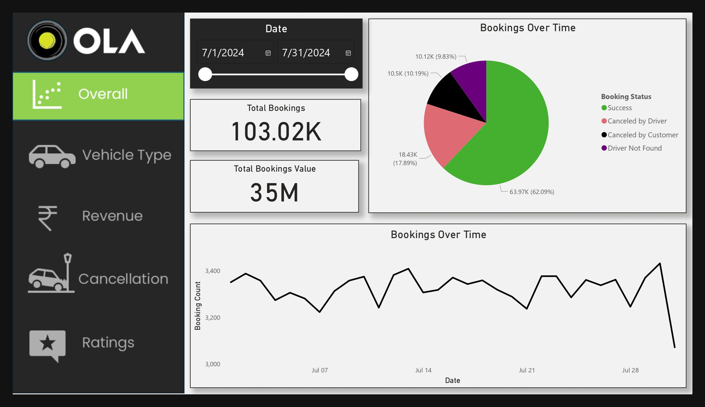

OLA Data Analyst Project

Objective
To create an interactive dashboard that provides actionable insights into key metrics of Ola's cab booking platform, enabling stakeholders to monitor operational performance, identify trends, and make data-driven decisions to improve customer satisfaction and optimize resources.
Description
This project involves the development of an interactive and visually appealing dashboard using Power BI to analyze booking data from an online cab service platform, Ola. The dashboard is designed to provide key insights into various metrics, helping stakeholders make data-driven decisions.
Key Features
-
Overview Dashboard:
- Displays total bookings, total booking value, and booking trends over time.
- Includes a pie chart breaking down booking statuses, such as successful bookings, cancellations, and "driver not found" incidents.
-
Vehicle Type Analysis:
- Compares performance across different vehicle types (e.g., Prime Sedan, Prime SUV, Mini, Auto, Bike, etc.).
- Provides data on total booking value, success rates, average distance traveled, and total distance covered.
-
Revenue Insights:
- Analyzes revenue distribution by payment methods (cash, UPI, credit card, debit card).
- Identifies top customers based on booking value and tracks booking trends over time.
-
Ride Cancellation Analysis:
- Highlights reasons for ride cancellations, including cancellations by drivers, customers, or other factors.
- Provides trends in cancellations over time and identifies peak cancellation periods.
-
Customer and Driver Ratings Dashboard:
- Tracks customer satisfaction through average customer ratings over time.
- Analyzes driver performance based on ratings provided by customers.
- Identifies top-rated drivers and highlights areas of improvement.
-
Interactivity:
- Users can filter data by date and interact with slicers to explore insights at a granular level.
Tools and Technologies Used
- Power BI: For data visualization and dashboard creation.
- SQL: For data preprocessing and extraction.
- Microsoft Excel: For initial data exploration and transformation.
Impact
The dashboard simplifies the monitoring of operational performance, customer behavior, ride cancellations, and revenue streams. It enables Ola's decision-makers to pinpoint trends, address cancellation issues, enhance customer satisfaction, and optimize driver performance.
Personal Reflection
This project enhanced my skills in data visualization and dashboard design. The challenge of integrating multiple datasets and ensuring the interactivity of the dashboards allowed me to deepen my understanding of Power BI and SQL. This hands-on experience also improved my ability to present complex data in a simple and actionable format.